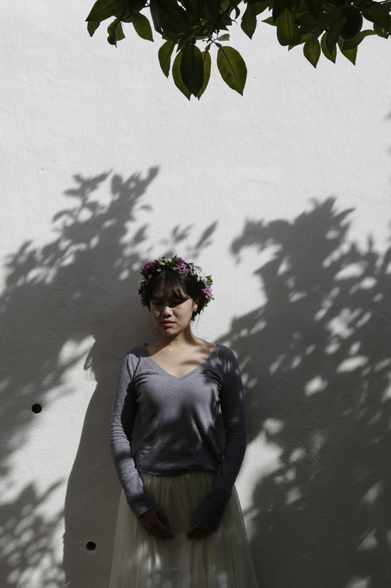
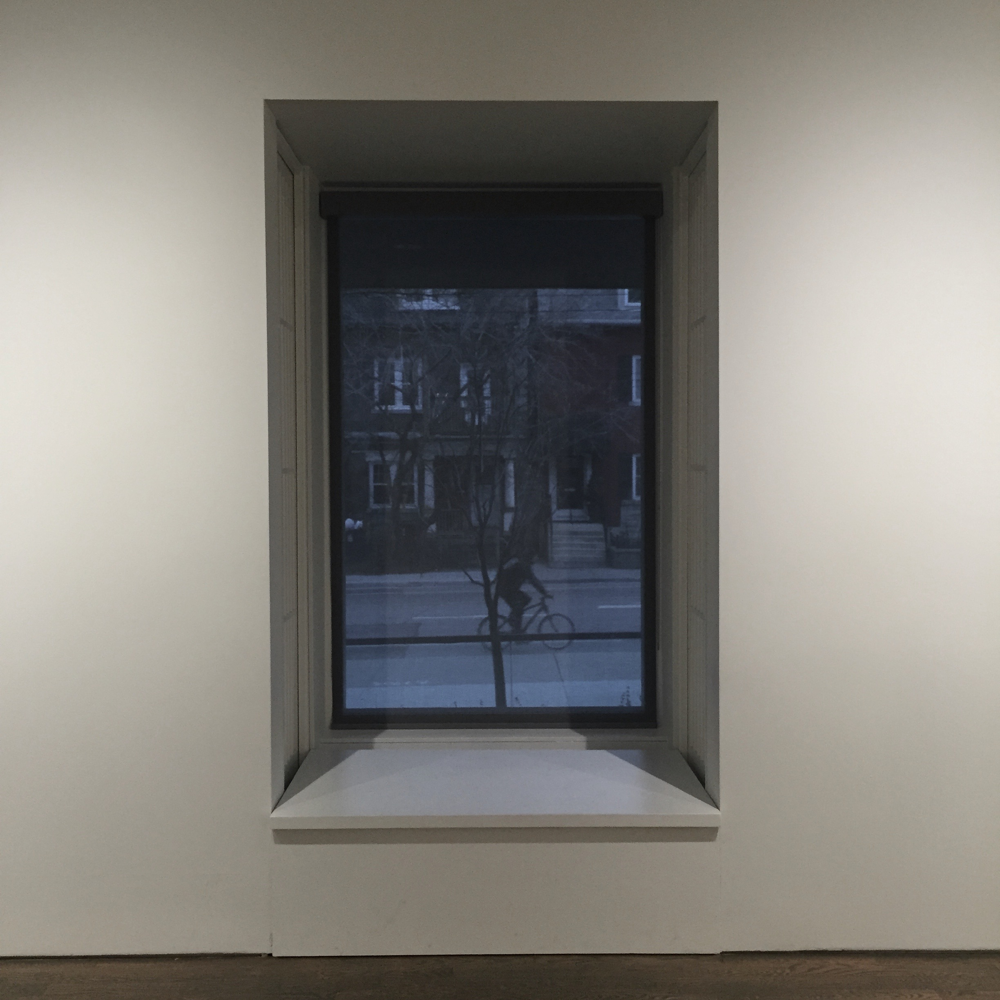

Works



The height of a full-grown, full-size llama is 1.7 to 1.8 m (5.6 to 5.9 ft) tall at the top of the head, and can weigh between 130 and 200 kg (290 and 440 lb). At birth, a baby llama (called a cria) can weigh between 9 and 14 kg (20 and 31 lb). Llamas typically live for 15 to 25 years, with some individuals surviving 30 years or more.
They are very social animals and live with other llamas as a herd. The wool produced by a llama is very soft and lanolin-free. Llamas are intelligent and can learn simple tasks after a few repetitions. When using a pack, they can carry about 25 to 30% of their body weight for 8 to 13 km (5–8 miles).